The slide of the lecture is on the left, the same figure or table on the right, computed in the browser from the same data. The ▶ button moves the parameter step by step; the “Worked example” boxes redo the calculation with the numbers of the chapter.
The idea of cointegration · The Engle–Granger two-step method · Error correction models · The VECM and the Granger representation theorem · The Johansen tests · Estimating and interpreting β and α · Forecasting: VECM or VAR in differences? · Economic examples: parity and interest rates · An application: pairs trading
The idea of cointegration
The drunk and her dog by simulation
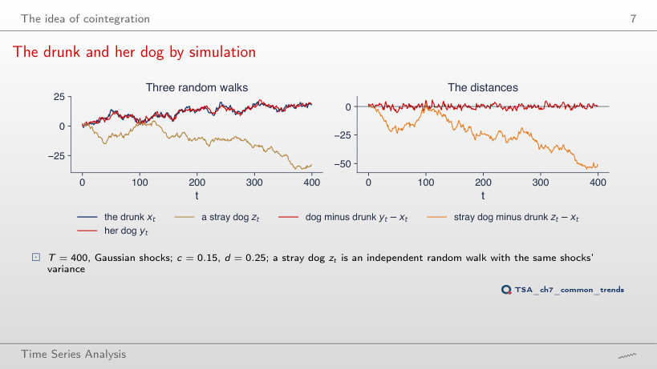
Answer
0.261: the unit root is no longer rejected. Without correction, y − x is the difference of two independent random walks, hence a random walk itself; the standard deviation of the distance rises from 1.86 to 7.07. With c = 0.15 and d = 0.25, ρ = 0.6 and p < 0.001: error correction, not the common starting point, keeps the distance bounded.
Common stochastic trends
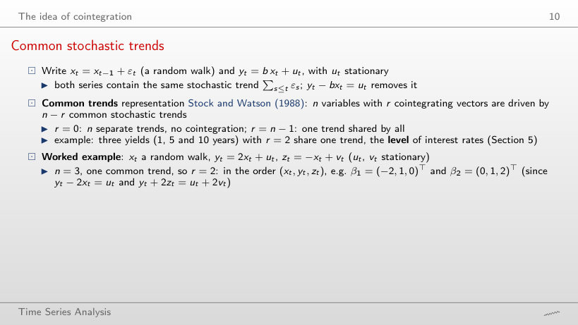
Worked example
Answer
β₂ = (0, 1, 1)ᵀ: yt + zt = ut + vt, with no trend. The vector depends on the coefficients: in general β₂ = (0, 1, −a/c)ᵀ, hence (0, 1, 2)ᵀ for a = 2 and c = −1. The rank stays 2, because three series still share one common trend.
Four pairs of trending series
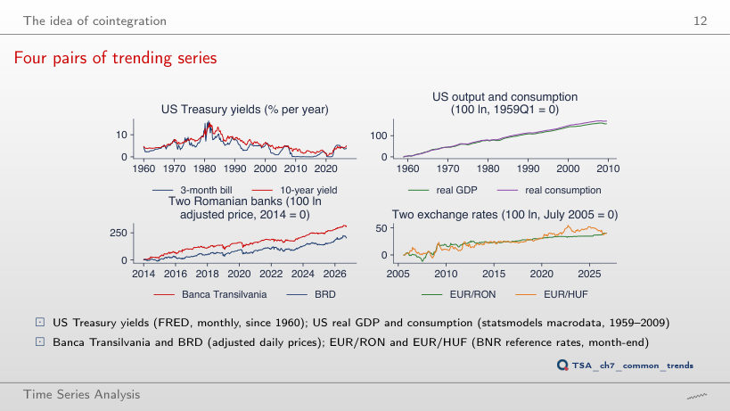
Answer
No: τ = −1.95, p = 0.553 on the last 102 quarters, against τ = −3.54, p = 0.029 on 203. With half the data and deviations that last years, the test has little power; a large p means that the relation is not separated from noise in this sample, not that it does not exist. For the banks the test stays below 5% (p = 0.044).
The Engle–Granger two-step method
The null distribution by simulation
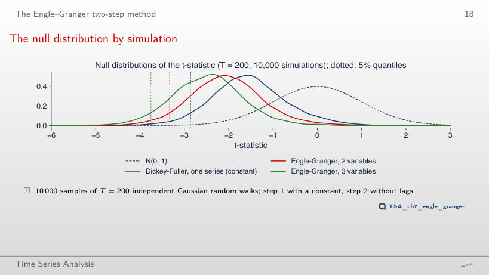
Answer
14.2%, about as at T = 200 (14.5%), and 30.0% with 3 variables. The distortion comes from OLS choosing b̂ to make the residuals as small as possible, not from the sample length; at T = 50 the right critical value for 2 variables is −3.46 (simulated quantile −3.41), against −2.92 in the Dickey–Fuller table.
Critical values of the Engle–Granger test
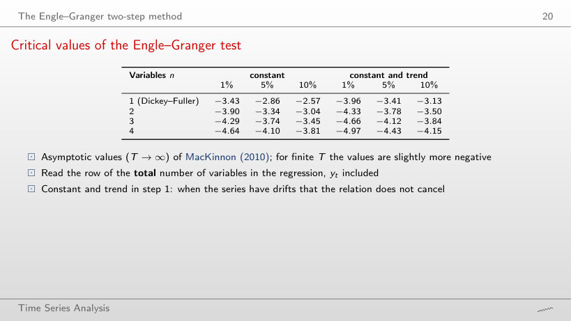
Answer
−3.46, against −3.34 asymptotically and −3.37 at T = 200. In small samples the distribution of the statistic is shifted further to the left, so the critical values are more negative; the Dickey–Fuller table (−2.92 at T = 50) would be even further from the right one.
Worked example: US consumption and income
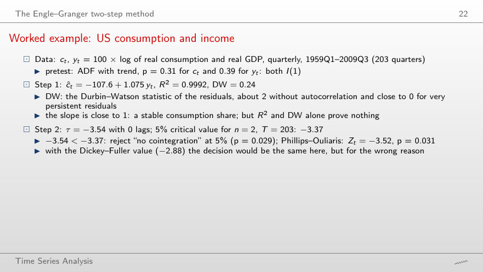
Worked example
Answer
No: τ = −3.00 against the Engle–Granger critical value −3.39 (p = 0.111), on 108 quarters. With the Dickey–Fuller value (−2.89) it would be rejected, wrongly. R² stays above 0.99 and the slope is 1.072, but neither a high R² nor a slope close to 1 proves cointegration.
The step-1 residuals
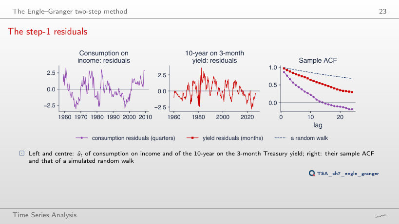
Answer
No: it rises from 0.31 to 0.46, and for the yields ρ̂(12) rises from 0.58 to 0.62. In the second half of the samples the deviations from the long-run relation last longer; the persistence of the residuals depends on the period, which is why the test, not the shape of the ACF, decides.
Engle–Granger and Phillips–Ouliaris on real data
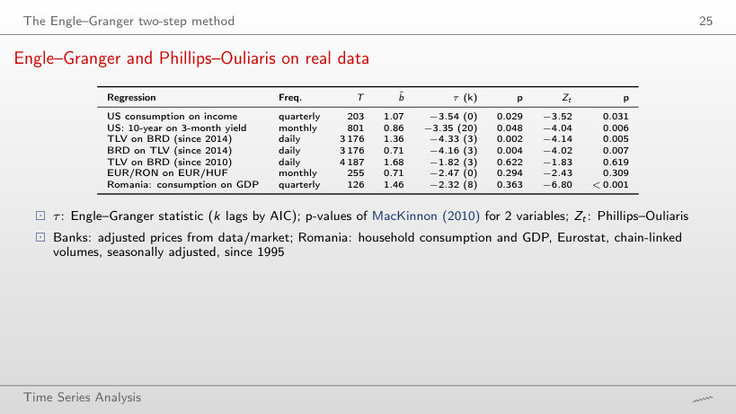
Worked example
Answer
There is now: τ = −3.98, p = 0.008 (Phillips–Ouliaris p = 0.001), against p = 0.622 on the whole sample since 2010. Without 2010–2014 the relation between the two banks appears; the same pair gives opposite verdicts depending on the start date, which is why choosing the sample after seeing the data is data snooping.
Error correction models
Speed of adjustment and half-life
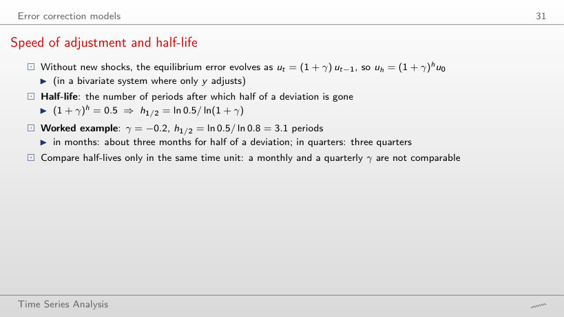
Worked example
Answer
One period: ln 0.5/ln 0.5 = 1. Half of the deviation disappears at each step, so after one period exactly half is left. The rule 1/|γ| = 2 would assume a linear, not a geometric, adjustment.
Half-lives: theory and estimates
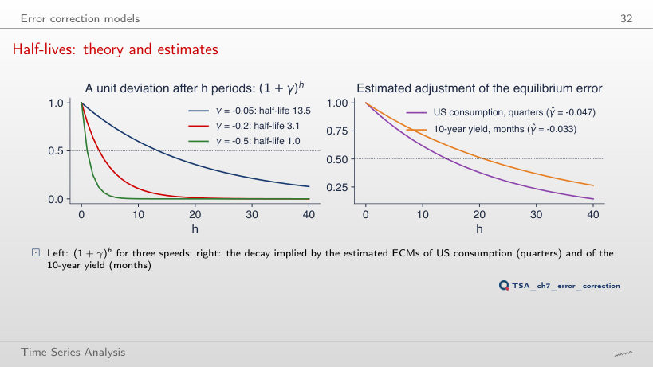
Answer
27 quarters: γ̂ = −0.025, with t = −0.66, against 14.3 quarters and t = −1.75 up to 2009. On 1959–1990 the error correction term is not separated from noise, and a γ̂ small in modulus gives a long and imprecise half-life. For the 10-year yield, up to 1990: γ̂ = −0.048 (t = −4.58), 13.9 months.
Worked example: one quarter of consumption
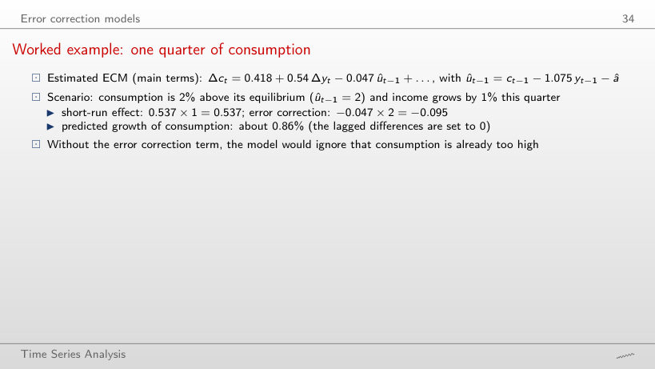
Worked example
Answer
1.05%: 0.418 + 0.537 × 1 + (−0.047) × (−2) = 0.418 + 0.537 + 0.095. When consumption is below equilibrium, the correction term pushes it up, by the same amount by which it held it back in the lecture’s example (0.86%).
The VECM and the Granger representation theorem
Worked example: a bivariate VECM
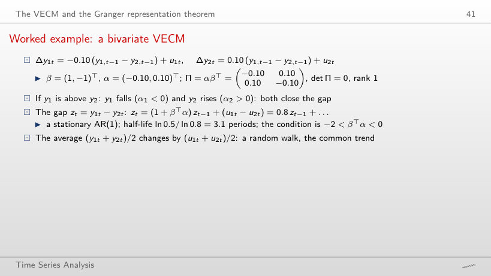
Worked example
Answer
No: 1 + βᵀα = 1 + α₁ − α₂ = 1 − 0.1 + 0.1 = 1, so zt = zt−1 + u₁t − u₂t is a random walk. Both variables fall when y₁ > y₂, at the same speed, so the gap does not close: what matters is βᵀα, not the sign of each α.
The Johansen tests
Worked example: from eigenvalues to statistics
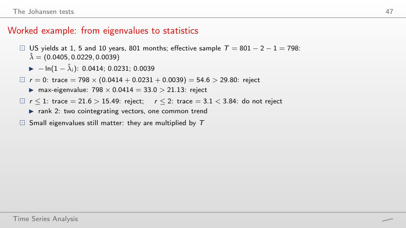
Worked example
Answer
Rank 1: λtrace(0) = 45.5 > 29.80, but λtrace(1) = 14.5 < 15.49, with T = 609. Over 1960–2026 the rank is 2. With fewer observations the second, very persistent relation is no longer separated from a unit root; the rank chosen by the test depends on its power too, not only on the structure of the data.
Johansen tests on three systems
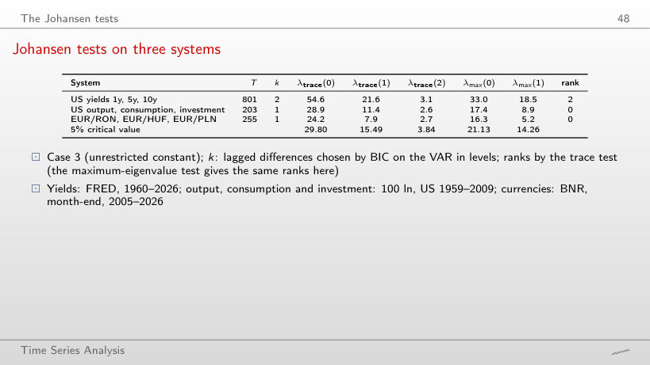
Answer
Rank 1: λtrace(0) = 37.5 > 29.80 and λtrace(1) = 15.3 < 15.49, against rank 0 with k = 1 (28.9, a near miss). The number of lags changes the verdict; for the three currencies the rank stays 0 (28.1).
The deterministic case changes the answer
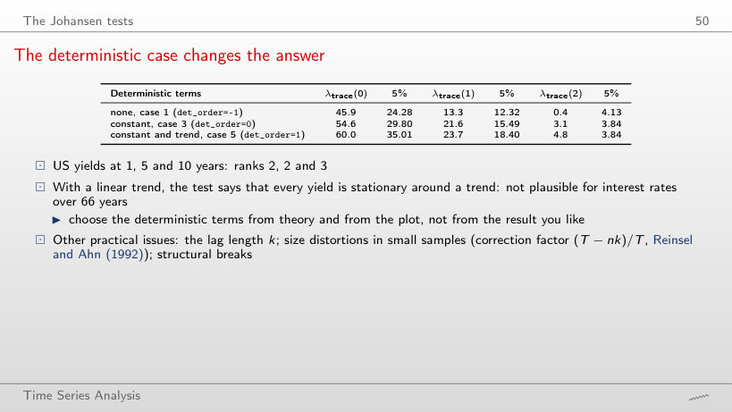
Answer
Rank 1: λtrace = 41.4, then 11.1 < 18.40, against rank 3 over 1960–2026. On the whole sample the linear trend absorbs the fall of the yields after 1981, and the test ends up calling every yield stationary around a trend; on the sample since 1990 all three cases give rank 1.
Estimating and interpreting β and α
The term-structure VECM
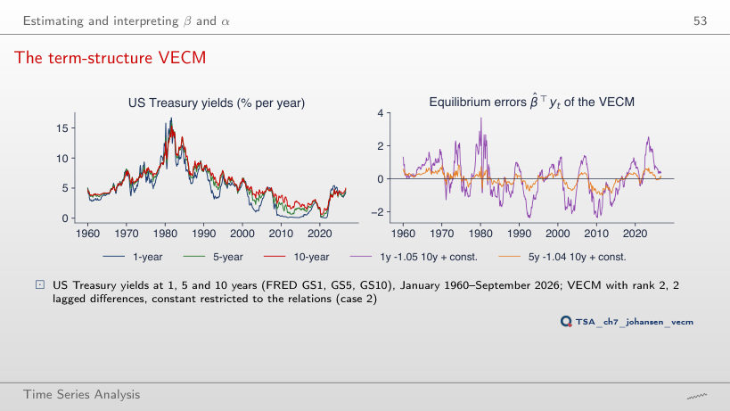
Answer
−0.954, against −1.046 over 1960–2026; in the second relation −0.988 against −1.045. Both stay close to −1, so the equilibria are still almost the spreads i⁽¹⁾ − i⁽¹⁰⁾ and i⁽⁵⁾ − i⁽¹⁰⁾. With a super-consistent β̂, a difference of 0.09 on 40 years of data reflects a change of sample, not only estimation noise.
The adjustment coefficients
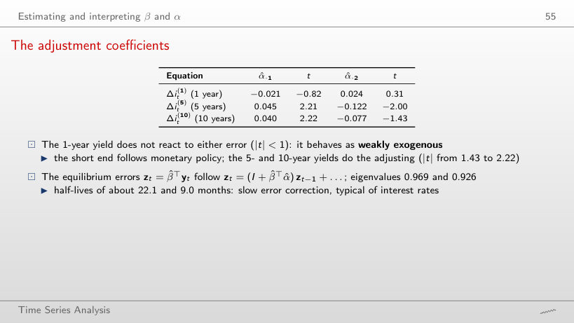
Worked example
Answer
No: t = 2.10 and −3.10 for the two equilibrium errors, against −0.82 and 0.31 over 1960–2026. Before 2001 the short yield also reacted to the deviations from equilibrium; the weak exogeneity of the short end appears on the sample that includes the periods of near-zero policy rates.
Impulse responses of the VECM
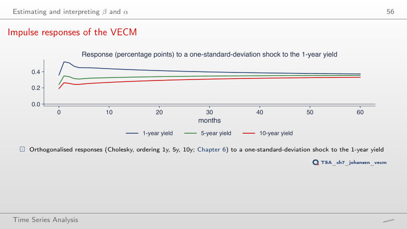
Answer
No: +0.30, +0.30 and +0.29 percentage points for 1, 5 and 10 years (on impact 0.41, 0.27, 0.21). With one common trend, the shock moves the level of all yields permanently, and the responses become almost equal because the spreads return to their means; the same shape appears over 1960–2026 (0.37, 0.36, 0.33).
Forecasting: VECM or VAR in differences?
VECM against a VAR in differences, out of sample
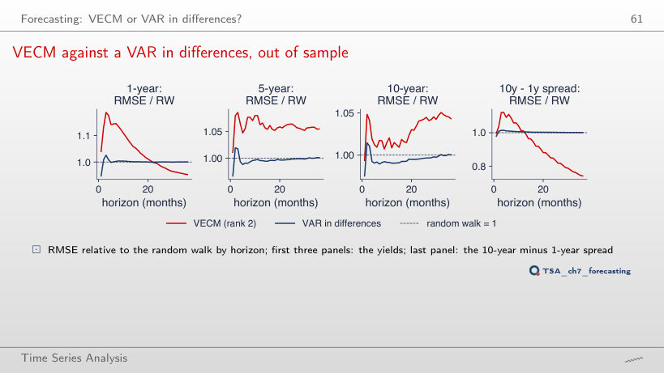
Answer
Yes: relative RMSE 0.83 (75 origins), against 0.74 from 1990, and the VAR in differences stays at 1.00. For the level of the 1-year yield the VECM does not beat the random walk (1.05 at 36 months). Cointegration helps to forecast the relation, not the common trend.
Economic examples: parity and interest rates
PPP for the leu
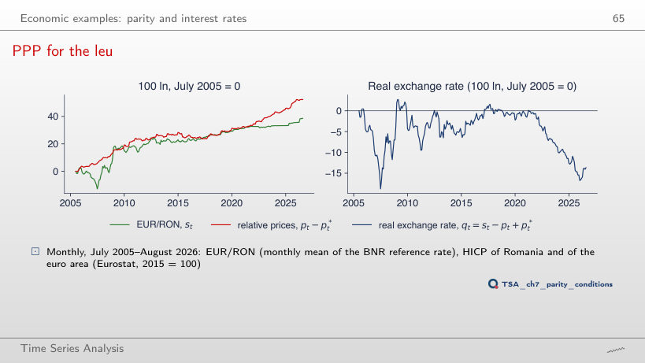
Answer
No: p = 0.924 (with trend 0.957), further from rejection than over 2005–2026 (0.24). Since 2010 the leu depreciated by 23.7 log points while relative prices rose by 33.1: the real exchange rate kept falling. A shorter sample cannot show adjustments with half-lives of several years.
ROBOR and Euribor
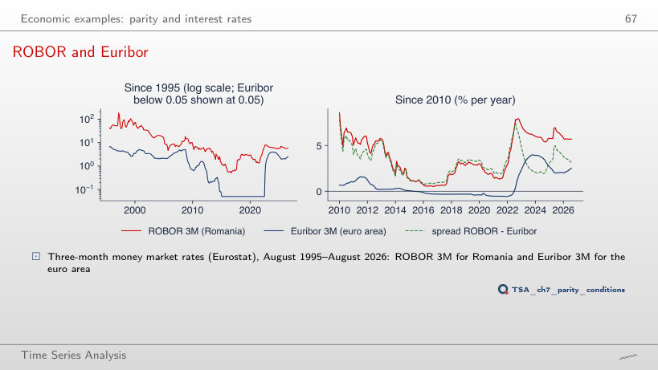
Answer
No: τ = −3.24, p = 0.063, and Phillips–Ouliaris gives p = 0.338, against 0.047 and 0.029 since 2010. Moreover, γ̂ of the ROBOR ECM turns positive (0.011): after 2015 ROBOR no longer returns towards the relation with Euribor. With its own monetary policy, the link between the two rates depends strongly on the chosen period.
Three Central European currencies
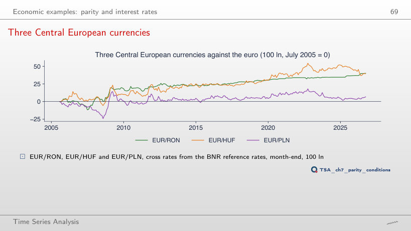
Answer
11.1, against the critical value 29.80: the rank stays 0, as since 2005 (24.2) and since 2012 (12.7). On a shorter sample the test has even less power, and ADF does not reject a unit root for any rate (p = 0.958; 0.626; 0.335). No period shows a common trend of the three currencies.
An application: pairs trading
Banca Transilvania and BRD
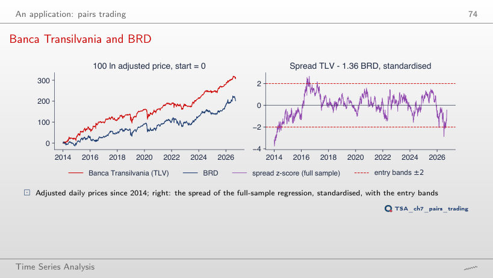
Answer
About 444 trading days, with ρ̂ = 0.998 and b̂ = 1.68, against 69 days since 2014. Over 2010–2026 the Engle–Granger test does not reject “no cointegration” (p = 0.622): the spread behaves almost like a random walk, and an open position could wait for years. The favourable result since 2014 depends on the chosen start date.
Pairs trading out of sample
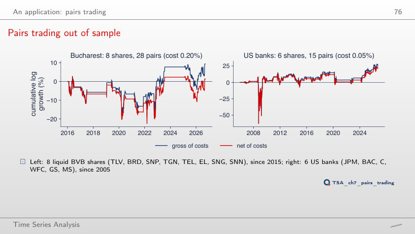
Answer
−0.35% per year (Sharpe −0.05), against 0.41% with the lecture’s costs; gross it stays 1.17%. The break-even cost is 0.31%, so any higher cost makes the strategy unprofitable. For the US banks, with a cost of 0.10%, the net return falls only from 2.57% to 2.37%.
US Treasury yields GS1, GS5, GS10 and TB3MS (FRED, monthly, January 1960 – September 2026), EUR/RON, EUR/HUF and EUR/PLN (BNR, month-end, July 2005 – September 2026), the monthly mean of EUR/RON and the HICP (Eurostat, July 2005 – August 2026), ROBOR 3M and Euribor 3M (Eurostat, August 1995 – August 2026), Romanian household consumption and GDP (Eurostat, 1995Q1 – 2026Q2, the vintage of the lecture, read from the line of the seminar chart, with no point dropped). The yields, BNR rates, HICP, ROBOR and Euribor are read with the chapter’s loaders (FRED, BNR, Eurostat, downloaded on 4 November 2026) and cut at the end dates of the slides; they reproduce the numbers of the lecture exactly. US consumption, income and investment: macrodata of statsmodels (1959Q1 – 2009Q3). Adjusted share prices: data/market. The Engle–Granger, ADF and Johansen tests are recomputed in the browser; the Phillips–Ouliaris statistics, the VECMs, the out-of-sample forecasts and the pairs-trading backtests are those of the chapter code. The simulations use the draws of the chapter’s seed. Variants that do not appear in the lecture (another sample, another number of lags, other thresholds, other costs, other simulation parameters) are extra runs of the chapter code with the same data and seed.